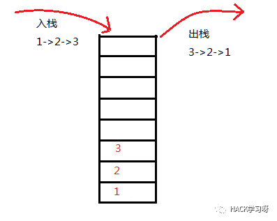
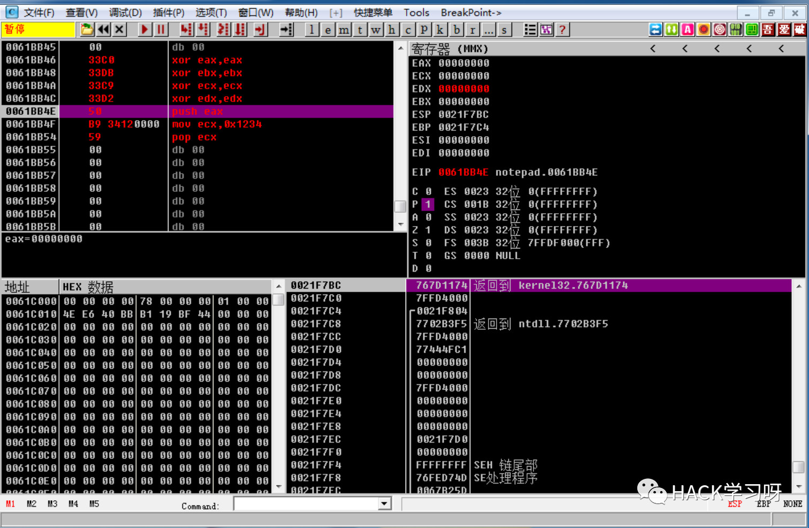
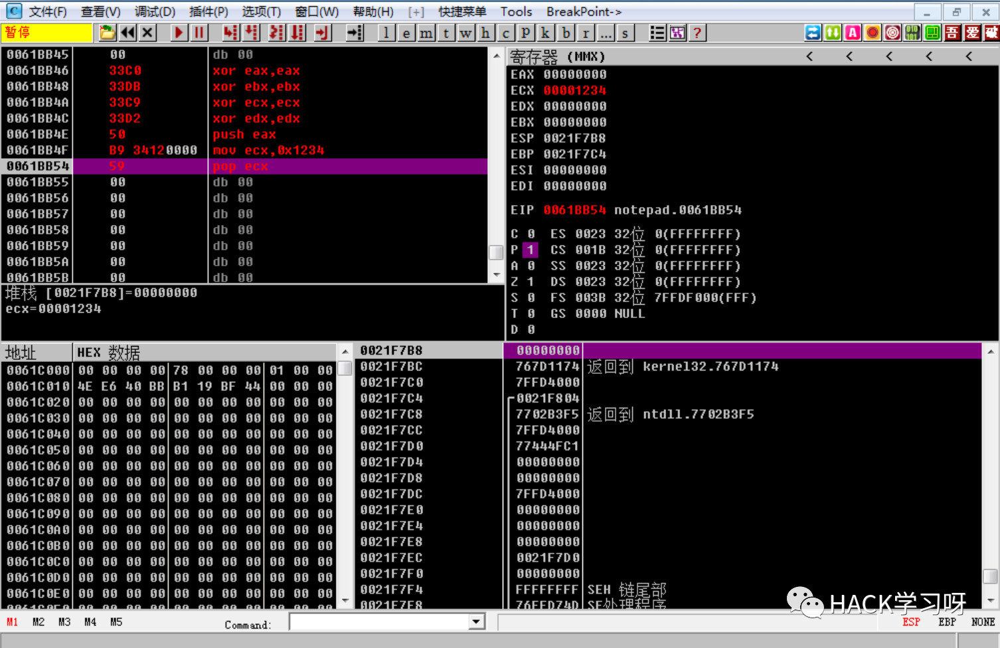
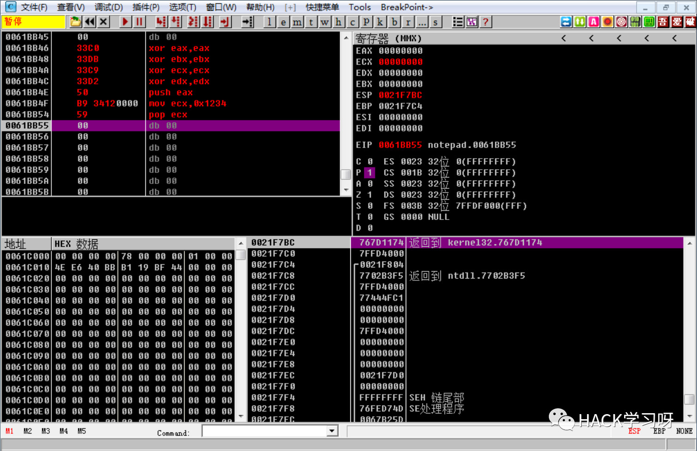

逆向工程——汇编基础[二]
堆栈
基本概念
堆栈是一个先进后出（FILO）的线性表
FILO是指：最后放进表中的数据在取出时，最先出来，即 Fist in Last Out。
系统堆栈不仅仅是一段内存。
由于CPU对它实施管理，因此你不需要考虑堆栈指针的修正问题。可以把寄存器内容，甚至一个立即数直接放入堆栈里，并在需要的时候将其取出。同时，系统并不要求取出的数据任然回到原来的位置。
堆栈相关指令
除了显示地操作堆栈（使用push和pop指令）之外，很多指令也需要使用堆栈，如INT、CALL、LEAVE、RET、RETE、IRET等等。配对使用上述指令并不会造成什么问题，然而，如果你打算使用LEAVE、RET、RETE、IRET这样的指令实现跳转（比JMP更为麻烦，然而有时，例如在加密软件中，或者需要修改调用者状态时这是必要的）的话，那么要搞清楚他们做的到底是什么，并且精确而了解自己要做什么。
push/pop指令
push 寄存器：将一个寄存器中的数据压入堆栈；pop 寄存器：将栈顶的数据弹出堆栈，并传入指定的寄存器。
1 | push ax ;将ax中的数据入栈 |
push 段寄存器：将一个段寄存器中的数据压入堆栈；pop 段寄存器：将栈顶表示的数据弹出，并传入端寄存器。
1 | push ds |
push 内存单元：将一个内存单元处的数据压入堆栈；pop 内存单元：将栈顶表示的数据弹出，并传入内存单元。
1 | push [0] ;将DS:[0]的数据压入堆栈 |
8086CPU的入栈和出栈都是以字为单元的。
简单实践
请各位同学自行下载
OllyDBG，然后用OD随便打开一个程序，比如notepad.exe，然后鼠标滚动反汇编窗口，直到遇到空的地方。
初始化

Ollydbg 将是我们以后用到的主要软件之一。请各位同学自行下载， 并搜索资料熟悉一下。
我们来认识下上图的信息：
左上角的窗口中，我们可以编写汇编指令。右上角的窗口显示了各个寄存器的状态和值。左下角是二进制以及十六进制的数据。右下角是堆栈的情况。
如果想让OD从你指定的位置开始执行，请
右击该行，并选择在此处新建EIP。按F7键单步执行四次。执行完上述四条XOR指令之后，我们将EAX／EBX／ECX／EDX成功清零。
EIP的值，为当前高亮的代码行，表示即将要执行的语句。
通过堆栈窗口我们可以看到：
堆栈的结构是
从下往上减少；栈顶的位置是
0021f7bc；两个相邻的栈地址相差
4h。
POP／PUSH操作
PUSH EAX： 在我们执行了push操作之后，栈顶变为了
在我们执行了push操作之后，栈顶变为了0021f7b8，而这个地址对应的数据为00000000(h)。MOV ECX,1234h:
POP ECX:
注意ECX值的变化。通过mov指令，我们给ECX传入了0x1234h，但是通过pop指令，我们将栈顶的EAX的值，弹出了堆栈，并且传递给了ECX，同时ESP栈顶+4变为了push eax之前的地址。
子程序
在汇编语言中，无门并不能像高级语言中那样，在不和程序其他部分起冲突的情况下，定义和其他主程序或子程序一样的变量名。
汇编语言并不注重程序员的负担，它依赖程序员的良好设计，以期发挥CPU的最佳性能。
汇编语言不是结构化的语言，它不提供直接的“局部变量”。如果需要，只能通过堆或栈自行实现。
参数的传递是靠寄存器或堆栈来完成的。高级语言中，子程序（函数／过程，或者类似概念的东西）依赖于堆和栈来传递。
子程序的执行过程
无论是C／C++／BASIC／Pascal，子程序的执行过程基本都是一致的。
调用者将子程序执行完成时应返回的地址／参数压入堆栈。
子程序使用
BP指针+偏移量对栈中的参数寻址，并取出，完成操作。子程序使用
RET或RETF指令返回。此时，CPU将IP置为堆栈中保存的地址，并继续予以执行。
毋庸置疑，堆栈在整个过程中发挥着非常重要的作用。不过，本质上对子程序最重要的还是返回地址，如果子程序不知道这个地址，那么系统将会崩溃。
调用子程序的指令是CALL，对应的返回指令是RET，另外还有ENTER和LEAVE，她们可以帮助进行堆栈的维护。
CALL指令的参数是被调用子程序的地址。使用宏汇编的时候，这通常是一个标号。CALL和RET，一级ENTER和LEAVE配对，以实现对堆栈的自动操作，而不需要程序员进行PUSH/POP，以及跳转的操作，从而提高了效率。
下面一段程序，是从作者文档中抄下来的，我搭建环境并且编译之后，并没有得到相同的汇编代码，所以大家不用拘泥于下面的细节，但是可以从原作者的分析中得到一些有用的知识。
程序是这样的：
1 | int myTransform(int nInput){ |
作者编译出来，并且合并了C++代码和汇编代码：
1 | int myTransform(int nInput){ |
1 | 00401003 mov eax,dword ptr [nInput] ;取参数 |
这句话在另外一个反汇编器得到的结果是：
1 | 00401003 mov eax,dword ptr [ebp+8] ;取参数 |
剖析上面的程序只是说明了前面所提到的子程序的一部分用法。对于汇编语言来说，完全没有必要拘泥于结构化程序设计的框架。
中断
中断应该说是一个陈旧的话题。这新的系统中，它的作用正在逐渐被削弱，而变成操作系统专用的东西。并不是所有的计算机系统都提供中断，然而这x86系统中，它的作用是不可替代的。
中断实际上是一类特殊的子程序。它通常由系统调用，以响应突发事件。
例如，进行磁盘操作时，为了提高性能，可能会使用DMA方式进行操作。CPU向DMA控制器发出指令，要求外设和内存直接交换数据，而不通过CPU。然后，CPU转去进行其他的操作；当数据交换结束时，CPU可能需要进行一些后续操作，但此时它如何才能知道DMA已经完成了操作呢？
很显然不是依靠CPU去查询状态——这样DMA的优势就不明显了。为了尽可能地利用DMA的优势，这完成DMA操作的时候，DMA会告诉CPU“这事儿我办完了”，然后CPU会根据需要进行处理。
这种处理可能很复杂，需要若干条指令来完成。子程序是一个不错的主意，不过，CALL指令需要指定地址，让外设强迫CPU执行一条CALL指令也违背了CPU作为核心控制单元的设计初衷。考虑到这些，这x86系统中引入了中断向量的概念。
中断向量表是保存在系统数据区（实模式下，是0:0开始的一段区域）的一组指针。这组指针指向每个中断服务程序的地址。整个中断向量表的结构是一个线性表。
每个中断服务都有自己的唯一编号，我们通常称之为中断号。每一个中断号对应中断向量表中的一项，也就是一个中断的向量。外设向驼背发出中断请求，而CPU自己将根据当前的程序状态决定是否中断当前程序并调用相应的中断服务。
不难根据造成中断的原因将中断分为两类：硬件中断和软件中断。硬件中断有很多分类方法，如根据是否可以屏蔽分类、根据优先级高低分类，等等。考虑到这些分类并不一定科学，并且对于我们介绍中断的使用没有太大的帮助，因此我们并不打算太详细地介绍它。
在设计操作系统时，中断向量的概念曾经带来过很大的便利。操作系统随时可能升级，这样，通过CALL来调用操作系统的服务（如果说每个程序都包含对于文件系统、进程表这些应该由操作系统管理的数据的直接操作的话，不仅会造成程序的臃肿，而且不利于系统的安全）就显得不太合适了——没人知道以后的操作系统的服务程序入口点会不会是那。软件中断的存在为解决这个问题提供了方便。
对于一台包含了BIOS的计算机来说，启动的时候系统已经提供了一部分服务，例如显示服务。无论你的BIOS、显卡有多么的“个性”，只要他们和IBM PC 兼容，那么此时你肯定可以通过调用16(10h)号中断来使用显示服务。调用中断的指令是：
1 | int 中断号 |
这将引发CPU去调用一个中断。CPU将保存当前的程序状态字，清除Trap和Interrupt两个标志，将即将执行的指令地上压入堆栈，并调用中断服务（根据中断向量表）。
编写中断服务程序不是一件容易的事情。很多时候，中断服务程序必须写成可重入代码（或纯代码，pure code）。所谓可重入代码是指，程序的运行过程中可以被打断，并由开始处再次执行，并且执行结果不受影响。
由于在多线程环境中等其他一些地方进行程序设计时也需要考虑这个因素，因此这里着重说一个可重入代码的编写。
可重入代码最主要的要求就是，程序不应使用某个指定的内存地址的内存（对于高级语言来说，这通常是全局变量，或对象的成员）。如果可能的话，应使用寄存器，或其他方式来解决。如果不能做到这一点，则必须在开始、结束的时候分别禁止和启用中断，并且，运行时间不能太长。
调用软件中断时，通常都是通过寄存器传进、传出参数。这意味着你的int指令周围也许会存在一些“帮手”，比如下面的代码：
1 | mov ax,4c00h |
就是通过调用DOS中断服务返回父进程，并带回错误找反馈码0。其中，ax中的数据4c00h就是传递给DOS中断服务的参数。
到此，x86汇编语言的基础部分就讲完了。

参考文档来源：简明 x86 汇编语言教程
如有侵权，请联系删除